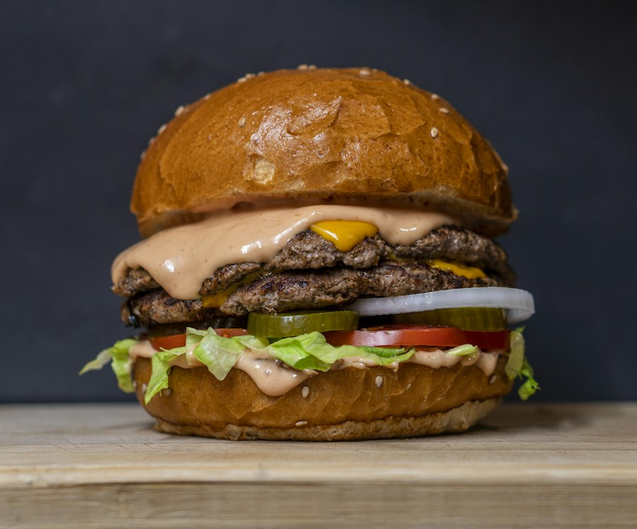

Glisse les blocs dans ton écran. Déplace-les ensuite avec la poignée ⠿.
Clique sur un bouton, puis sur son écran de destination.
Clique sur un nom pour ouvrir l’application dans un nouvel onglet. Les applications partagées depuis le studio apparaissent ici.
Le lien contient une copie du projet. Après une modification, crée un nouveau lien. Le lien est public et l’application apparaît dans la bibliothèque. Évite les noms personnels dans le titre.